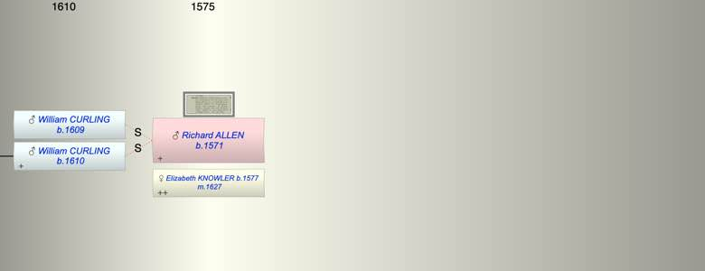

| [Index] |
| Richard ALLEN (1571 - ) |
|  |

|
| b. 1571 |
| m. 09 Jan 1627 Elizabeth KNOWLER (1577 - ) at St Mary Magdalen, Canterbury |
| Events in Richard ALLEN (1571 - )'s life | |||||
| Date | Age | Event | Place | Notes | Src |
| 1571 | Richard ALLEN was born | ||||
| 09 Jan 1627 | 56 | Married Elizabeth KNOWLER (aged 50) | St Mary Magdalen, Canterbury | Note 1 | |
| Death of step son William CURLING | St Laurence | presumably in 1609/10 | |||
| Created on a Mac™ using iFamily for Mac™ on 8 Oct 2023 |